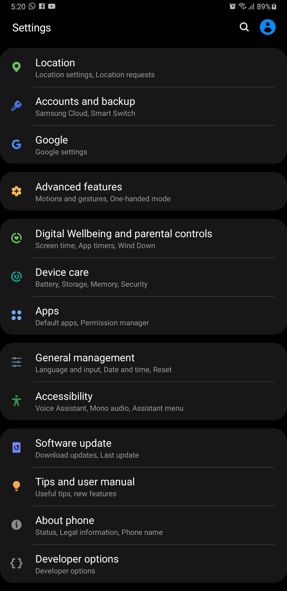

A continuacion se te ensegnara como conectar tu movil android a tu computadora escritorio o lapto con linux via adb remoto.
Pasos a Seguir
Abre una terminal en tu computadora.
ejecuta el siguiente comando para instalar adb sudo apt-get install adb

una ves instaldo el programa adb.
ejecuta el siguiente comando adb tcpip : 43232
cabe mencionar que los numros despues de tcpip son el puerto al cual se conectar nuestro dispositivo
por eso una ves despues de establecidos es recomentable que los anotes en algun lugar por que pronto seran
utilizandos.
Tambien no es sumamente necesaio que establescas como puerto el numero 42232 tu elijes el puerto que quieras
utlizar en mi caso utlizare ese, pero como ya mencione puedes usar el que tu gustes o prefieras.
Posteriormente activaremso el depurador usb de nuestro dispositivo corriendo corriendo con android
